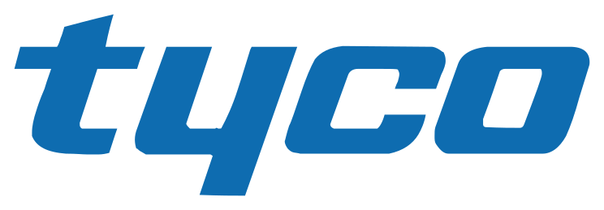

Name · year · major
Endicott College · Gerrish School of Business
Corporate Finance
BUS311 · Fall 2026 · Professor Bethany Evitts
Who are you?
Meet someone new · 5 minutesStart hereIntroduce your partner
Where are you from?
Excel experience?
Are you interested in any of these paths: Series 7, CFA, CFP, or another path?
What do you want from this class?
Professor Bethany Evitts
Theory meets practice
CFA
Academic credentials
CFA · MBA · BA Economics
Boston College · College of the Holy Cross
30+
Professional lens
Investment management
Fixed-income trading · U.S. trading-desk leadership · business and operations management
Teaching goal
Bridge theory and practice
Assistant Professor · Endicott College
My teaching philosophy
“Tell me and I forget. Teach me and I may remember. Involve me and I learn.”
Often attributed to Benjamin Franklin; attribution is disputed.
Orientation · part 1
Course at a glance
Core skills · real-company analysis · professional tools
What you will learn
Three skills · one companyFS
Read the evidenceFinancial statements
TVM
Move cash through timeTime value of money
NPV
Evaluate the choiceCapital budgeting
YOU
Defend the conclusionReal-company analysis
How your grade is built
100% total100%course total
40%
ExamsThree exams and a final
25%
Company projectAnalysis and presentation
20%
AssignmentsExcel, FactSet, and homework
15%
AttendanceParticipation and preparation
Fall 2026 milestones
September 1–December 18Exam 1Exact date in Canvas
Exam 2Exact date in Canvas
Exam 3Exact date in Canvas
Final examRegistrar schedule
Classes begin September 1; the last day of classes is December 11. Course-specific exam dates remain governed by the Fall 2026 syllabus and Canvas calendar.
The blueprint for success
Read the syllabusConcepts+Math
Prepare
Complete chapter material before class.
Bring the tools
Laptop and Excel are part of class.
Participate
Attendance and peer learning matter.
Tools for corporate finance
A connected workflowREAD
Textbook
Fundamentals of Corporate Finance
Brealey · Myers · Marcus
MODEL
Microsoft Excel
Make assumptions and decisions explicit.
RESEARCH
FactSet
Professional company and market data.
Excel still follows PEMDAS
Order of operationsPParentheses
EExponents
MMultiplication
DDivision
AAddition
SSubtraction
Activate FactSet
Endicott students · free accessFACTSET · COURSE SETUP
01
Follow Canvas instructionsUse the Pages area for activation steps.
02
Install the desktop appUse your Endicott account.
03
Explore before the next classFind company and industry resources.
FactSet homework
Before the next classACTIVATION
support.factset.com/academic- Activate access through Canvas
- Download FactSet Desktop
- Open the learning resources
- Confirm you can search a U.S. public company
We will examine
Small business
Cash flow is immediate, visible, and personal.
Every operating decision reaches the owner quickly.
We will examine
Big business
Caterpillar Inc. · NYSE: CAT
CAT
Capital structure, disclosures, and stakeholders add complexity.
Semester-long application
BUS311 Individual Company Capstone
Build one company-specific CFO decision in five stages.
Five stages build the capstone
100 points · 25% of the courseScope the decision5 points
Explain the revenue engine8 points
Model value and scenarios8 points
Challenge and revise4 points
Brief the Board75 points
Final PPTX and one-page PDF: Monday, Nov. 30 at 12:30 p.m. ET. Presentations run Nov. 30–Dec. 9. Canvas remains authoritative for live submission links.
The analysis follows one decision chain
Revenue before valuationScope the decision
Choose one actionable decision for an approved U.S. public company.
Explain the revenue engine
Diagnose drivers and state a testable revenue hypothesis.
Model value and scenarios
Connect valuation cases and sensitivities to the hypothesis.
Challenge and revise
Verify the strongest challenges, then revise or defend the recommendation.
Brief the Board
Submit the PPTX and one-page PDF, present, and defend the decision.
Required orderThe revenue hypothesis drives the valuation model—not the other way around.
Immediate action: select your company
Step 1CHOOSEU.S. public companyAn industry that interests you
ONEworkable company
AVOIDBanks and brokersApple
Banks and brokers have unusually complex financial structures.
Immediate action: prepare the tools
Steps 2–302
Activate FactSet
Follow Canvas instructions · install desktop · explore resources
03
Prepare the reading
Chapter 3 · Key Ratios · how analysts, traders, and investors think
Pause
Questions about the course?
Ask now. Verify details in the syllabus and Canvas.
Finance has five connected areas
Chapter 1One decision systemCorporate decisions draw evidence from every area.
Corporate finance
Finance drives value creation
Investment decisions become real assets, operating capacity, and long-term growth.
Three questions organize the field
Investment · financing · managementFinancial managerIncrease firm value
Investment decision
What should the firm invest in?
Capital budgeting
Financing decision
How should the firm finance it?
Capital structure
↻
Management decision
How should daily finance be managed?
Working capital
What will you accomplish?
Course outcomesBUS311Financial judgment
Increase value
Connect decisions to company value.
Analyze performance
Use statements and ratios.
Apply valuation
Use TVM, risk and return, and capital budgeting.
Course map: evidence and valuation
Overview · evidence to judgmentRead the evidence
Financial statements
Interpret balance sheets, income statements, cash flow, and ratios.
Translate through time
Time value of money
Move cash flows through time with discounted-cash-flow logic.
Value the choice
Capital budgeting
Evaluate long-term projects using DCF and comparable evidence.
Test the trade-off
Risk and return
Use CAPM and the Security Market Line to evaluate trade-offs.
Evidence→Cash flows through time→Project value→Risk-adjusted judgment
Course map: markets and financing
Overview · capital to securitiesRaise capital
Banks and capital markets
Access capital through loans and underwriting of debt and equity.
Choose the mix
Capital structure
Balance debt, equity, cost of capital, flexibility, and value.
Evaluate securities
Security analysis
Revisit stocks and bonds from the outside investor’s perspective.
Raise capital→Choose the financing mix→Evaluate the securities
Finance has a long memory
History · contracts to exchanges3,600+ yearsFinancial ideas compound across generations
Compound growth
Interest rates
Options
International banking
Futures
Joint-stock corporations
Money
New-issue speculation
Formation of the NYSE
Crises reshape financial practice
History · shocks and adaptation1929 → 2020Shocks change tools, rules, and judgment
Stock-market crash
Corporate bankruptcies
Eurodollar market
Financial futures
Inflation-indexed debt
Capital investment
Mergers
Inflation and controlling risk
The euro
Financial scandals
Subprime mortgages
Sovereign defaults · Brexit
Corporate finance
Invest. Finance. Manage.
What long-term investments should the firm take on?Where and how should it obtain financing?How should it manage everyday financial activities?
Who is the financial manager?
The CFO connects strategy to capital
TreasurerChief Financial OfficerController
A simplified finance organization
Editable SVGWhat does the financial manager do?
Role of the CFOChief Financial OfficerConnect strategy to capital
Corporate finance can lead to the C-suite
Career pathCFO→CEO
Finance leadership can become enterprise leadership.
Historical source-deck figure$639,000
Median total compensation · public-company CFO
“The number of CFOs being promoted to CEOs hits an all-time high.”
“One-third of CFOs saw up to 25% increase in total pay last year.”
Two decisions create firm value
Investment + financing01
Investment decision
What assets should the firm own?
ProjectsEquipmentAcquisitions
→
02
Financing decision
How should the firm pay for them?
DebtEquity
→
Inside the firmCombine both decisions
The financial manager chooses assets and funding together.
→
One goalCreate firm value
Good investments supported by appropriate financing.
The financial manager connects cash and assets
Five flowsCapital budgeting or financing?
You decidePair upWork with a partner to decide which bucket each outcome belongs in.
CAPITAL BUDGETINGorFINANCING
Capital budgeting or financing?
AnswersCAPITAL BUDGETING
INTC · MicroprocessorSHEL · PipelineAVP · Product launchFINANCING
BMW · Bank borrowingBOTH
PFE · Biotech acquisition + new sharesLegal form changes finance
Business structures
Sole proprietorshipPartnershipCorporation
What changes with the structure?
Liability · taxLEGAL FORMChoose the ownership structure
Sole proprietorship
LiabilityUnlimited
TaxPersonal tax on profits
Partnership
LiabilityUnlimited
TaxPersonal tax on profits
BUS311 focus · next concept
Corporation
LiabilityLimited
TaxCorporate tax on profits + personal tax on dividends
Separate ownership and management → agency problem
Simplified comparison; actual treatment depends on entity type and jurisdiction.
Separation of ownership and management
Managers and owners can want different things
Agency problems are conflicts of interest between managers and shareholders.
Align incentives with shareholder interests
Corporate prosperityManagerial
incentives
incentives
Shareholder
interests
Unifiedinterests
prosperity
Test the principleIf someone else sells your car, how would you pay them to want the same outcome you do?Next →
You do not have time to sell your car yourself—how would you pay someone else?
Agency examplePossible sale outcomes
Quick sale$18,000
Target sale$20,000
Strong sale$22,000
Flat fee$500orPercentage fee5%
Which contract better aligns the seller’s incentive with yours?
What does a $500 flat fee produce?
Contract 1FLAT-FEE FORMULAAgent pay = $500
Owner receives = sale price − $500
| Sale outcome | Agent earns | Owner receives |
|---|---|---|
| $18,000 | $500 | $17,500 |
| $20,000 | $500 | $19,500 |
| $22,000 | $500 | $21,500 |
INCENTIVE EFFECTThe agent earns the same amount at every sale price.
From $18,000 to $22,000, agent pay changes by $0 while owner proceeds increase by $4,000.
What does a 5% fee produce?
Contract 2PERCENTAGE FORMULAAgent pay = sale price × 5%
Owner receives = sale price × 95%
| Sale outcome | Agent earns | Owner receives |
|---|---|---|
| $18,000 | $900 | $17,100 |
| $20,000 | $1,000 | $19,000 |
| $22,000 | $1,100 | $20,900 |
WHY IT CAN MOTIVATEA higher sale price directly increases the agent’s personal reward.
The agent keeps 5¢ of every extra dollar, so more marketing, stronger negotiation, or waiting for a better offer can increase personal pay.
Here, a $4,000 higher sale price adds $200 to the agent’s compensation.
The agency relationship
Principal → agent → behaviorP
PRINCIPALShareholders
Define the interests to represent.
A
AGENTExecutives
Act for the corporation’s owners.
$
INCENTIVECompensation
Stock-based pay is common.
∞
DESIGNTime horizon
Alignment depends on structure and timing.
Corporate governance
Oversight constrains agency problems
Legal requirementsBoard of directorsActivist shareholdersInformation for investors
What do these firms have in common?
WorldCom · Tyco · Enronworldcom

Scandals changed governance
Failure → response01
ACCOUNTING SCANDALSEnron · Rite Aid · HealthSouth · Tricolour
02
AUDIT FAILUREArthur Andersen · Enron’s auditor
LAW
POLICY RESPONSE · 2002Sarbanes–Oxley (SOX) brings new scrutiny to governance and financial reporting
What Sarbanes–Oxley changed
2002SOXReporting
confidence
confidence
Executive certifications
Senior officers certify periodic reporting.
Control assessment
Management reports on internal control over financial reporting.
Audit oversight
PCAOB standards govern public-company audit practice.
Sarbanes–Oxley
Confidence has a cost
+
Reporting benefits
Investor confidenceReliable reportingStronger controlsSOXTrade-off
$
Compliance costs
DocumentationTestingAudit effortWhat’s SOX?
Video discussionWhat is SOX? with Gary GenslerOpen the source-linked video in a new tab
Before
What problem was the law designed to address?
After
Which benefit and cost does the video emphasize?